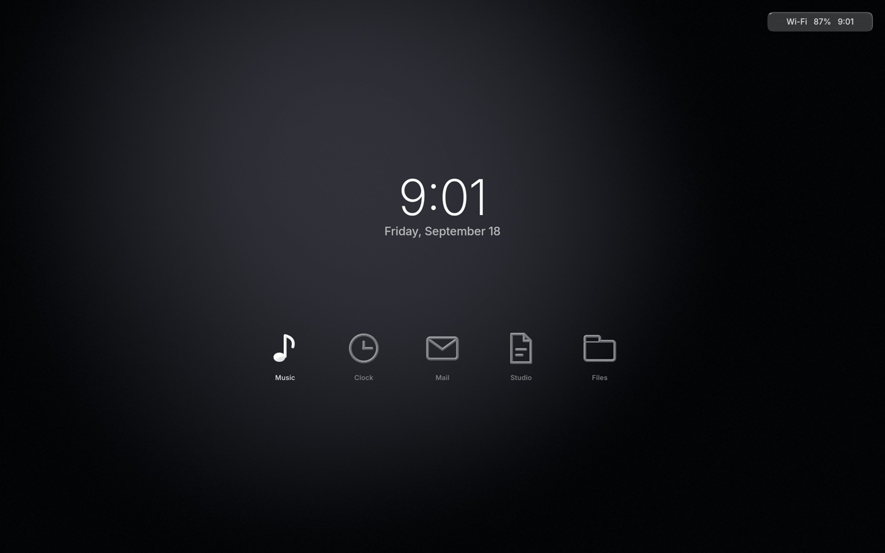
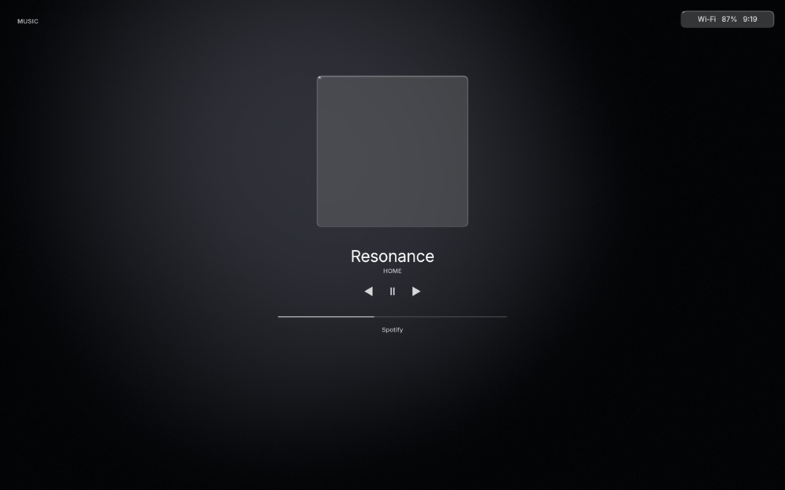
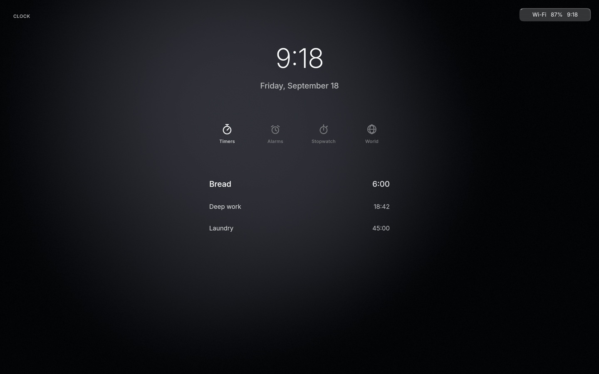
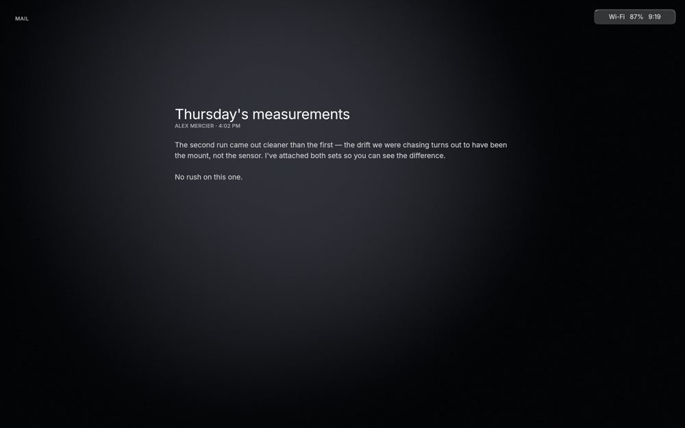
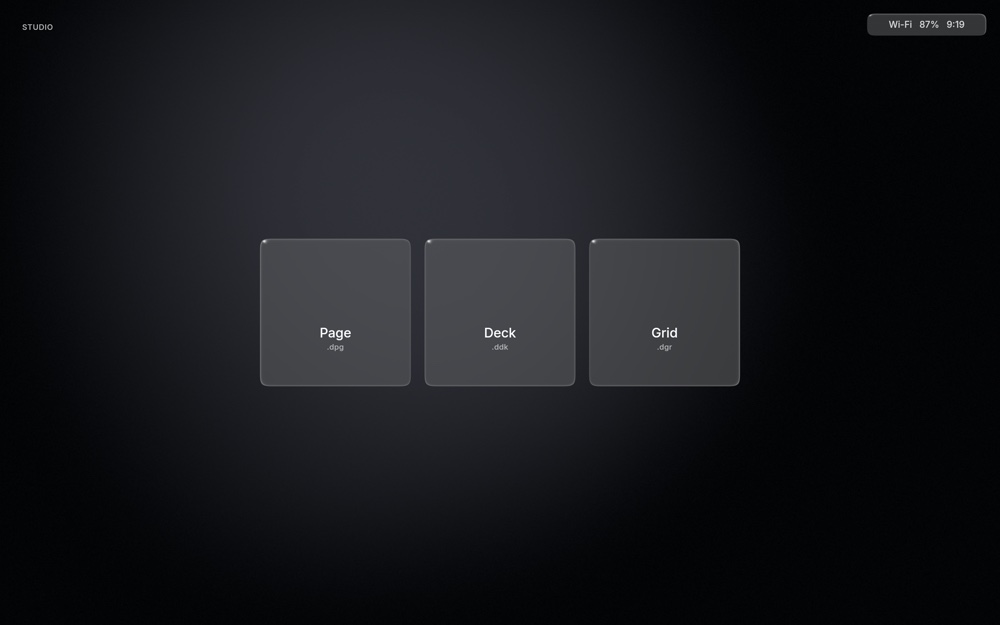
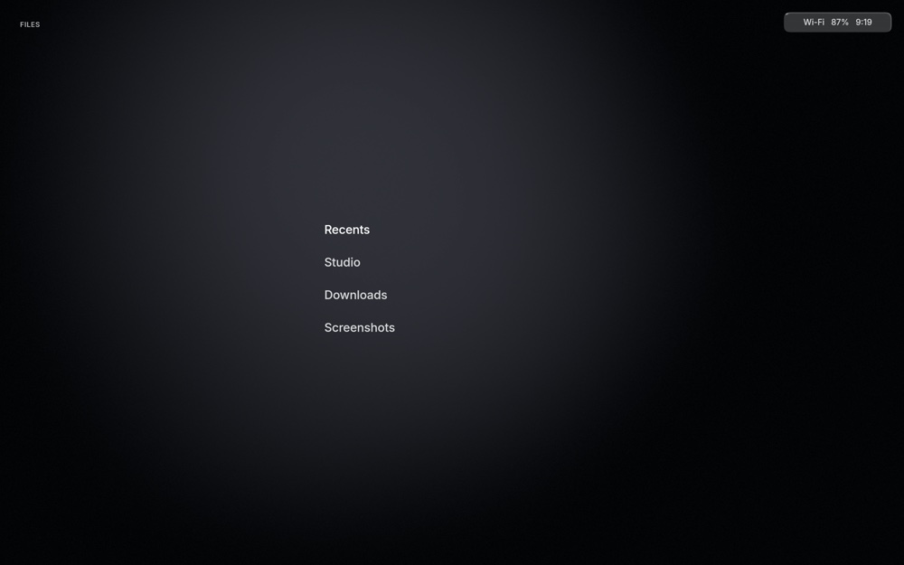
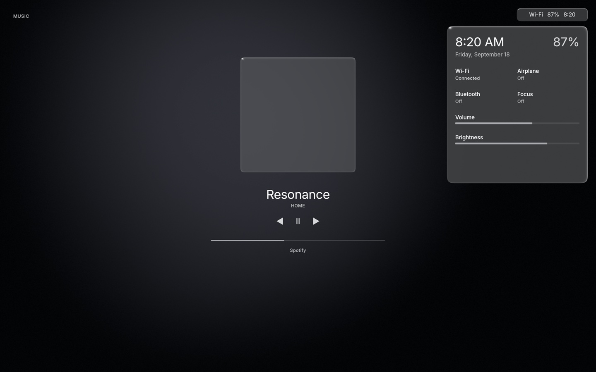
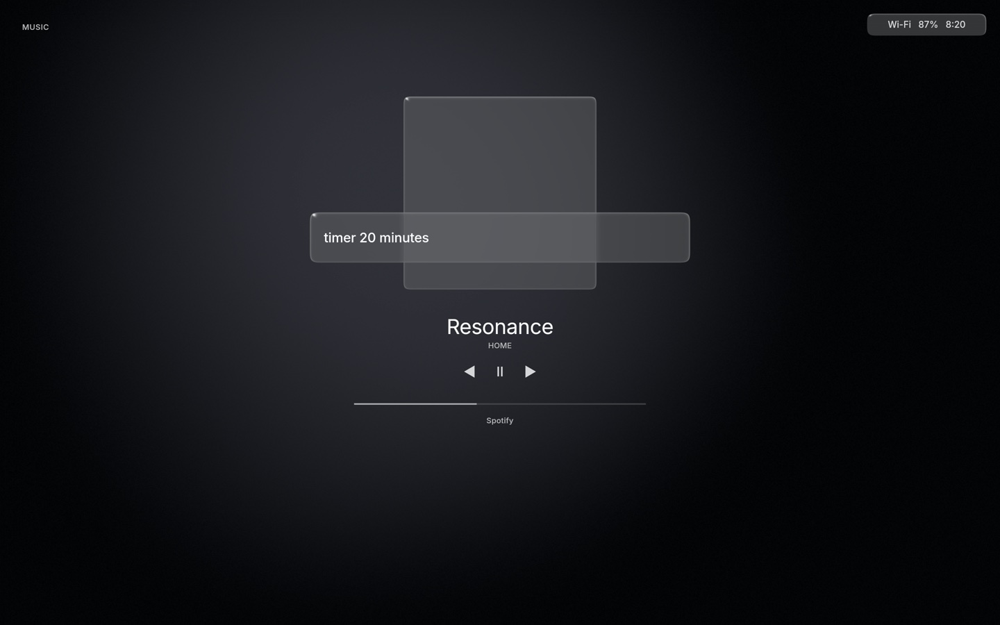
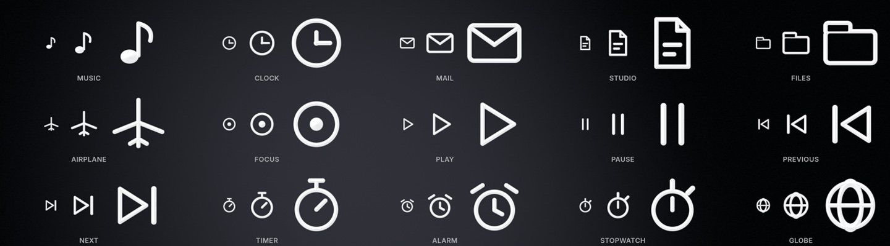

Home. The time, and the five places beneath it.
An operating system that does not compete with you
détends is not a desktop with a prettier theme. There is no dock, no taskbar, no desktop icons and no notification centre. Five destinations, one panel of system state, one search field, and a great deal of empty space left deliberately empty.
Five places





Switching transforms the workspace rather than opening a window. Interrupt a transition halfway and it redirects rather than restarting.
Glass is a material, not a decoration
A pane in détends is a physical object: it has a thickness, a rounded bevel and an index of refraction, and everything it does follows from those. Light bends only at the borders, so the body stays clean and readable — the opposite of a blurred rectangle, where the middle is exactly where the content becomes hardest to read.
Everything is composited in linear light and encoded once, at the very end, with blue-noise dither applied after the transfer curve rather than before it.



The icons are signed-distance fields evaluated in the shader, not glyphs — exact at any size, and lit by the same light as the glass.
What Helium does today
- Home the time and five places, by pointer or keyboard
- Clock timers, alarms, stopwatch and world clock, persisted
- Focus a global state, never a mode — it makes détends quieter
- Glass refraction, dispersion and Fresnel, in linear light
- Motion closed-form springs, interruptible, frame-rate independent
- Files five destinations over a real vault, with recently deleted
- Native audio kernels in C, C++ and aarch64 assembly
Music and Mail render their real layouts; their provider integrations, the Studio editors and the Wayland compositor are still ahead.